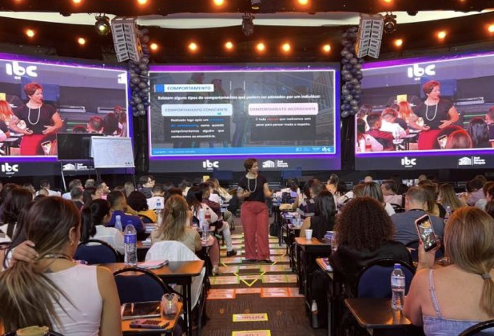

Day Training
Alinhamento intensivo com foco em prática e execução
Imersão presencial de alto impacto, voltada ao alinhamento rápido de conceitos e desenvolvimento de competências essenciais de liderança. É uma intervenção que gera clareza imediata e direcionamento para ação.
Impactos gerados:
- Alinhamento de linguagem e expectativas entre líderes
- Fortalecimento da comunicação e da condução de pessoas
- Clareza de papéis, prioridades e responsabilidades
- Aumento do senso de responsabilidade sobre resultados
- Maior consistência na atuação da liderança
Pode ser aplicado com líderes ou equipes, promovendo alinhamento e fortalecimento das relações de trabalho.
